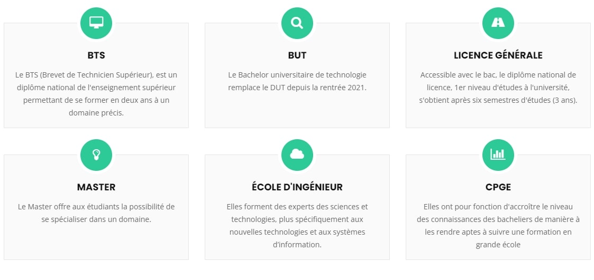

Portal Félix
Orientation
Orientation
Métier envisagés ou catégorie
- Je souhaiterais un métier dans l'informatique ,développeur ce genre de choses , je ne connais pas réelement la nuance entre eux.
Etudes post-bac à réaliser
- Je souhaite réaliser des études dans l'informatique , je ne sais pas réelement ce que je souhaiterais faire , je souhaiterais en apprendre plus et pouvoir les distinguers .

Spécialités ou filière technologique à choisir
- Je n'ai pas vraiment d'idées de spécialités ou filière à prendre, je dirais les maths la NSI et llcer anglais monde contemporain.
- Je pense continuer en filière general et de partir me spécialiser dans l'informatique après.